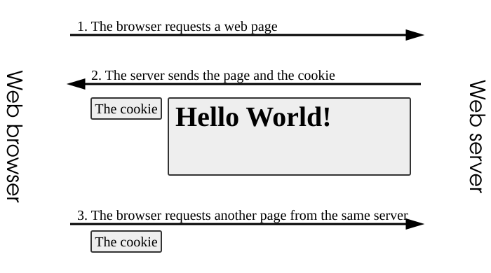

Online Safety & Privacy
Your Digital Footprint
Watch & Learn
- Teen Voices: Oversharing and Your Digital Footprint (Common Sense Education, 6 min)
- How Ads Follow You Around the Internet (Vox, 7 min)
- What Are Cookies? And How They Work (Create a Pro Website, 8 min)
- What Is a Cookie? (Digital Power, 5 min)
Video Quiz
In the Common Sense Education video, what do the teens say is the main risk of oversharing personal details on social media?
In the Common Sense Education video, what advice do the teens give about posting photos or stories involving other people?
In the Vox video, what technology do advertisers mainly use to follow you from site to site and show you ads for products you already looked at?
In the Vox video, what does the term “retargeting” refer to?
In the “What Are Cookies?” video by Create a Pro Website, what do first-party cookies typically do?
In the Digital Power video, what happens to a session cookie when you close your browser?
Theory

What Is a Digital Footprint?
A digital footprint is the trail of data you create every time you go online. Every search query, every like, every photo upload, every account sign-up — it all adds up to a detailed record of who you are and what you do on the Internet.
There are two kinds. An active footprint is data you knowingly share: a comment on a YouTube video, a post on Instagram, filling out a profile on a gaming site. A passive footprint is data collected about you without you doing anything obvious: the IP address your device broadcasts, the pages a website logs you visiting, or the location data your phone quietly shares with an app.
Together, active and passive footprints paint a surprisingly complete picture. Data brokers, advertisers, and even future employers can piece it together to learn your interests, habits, and personal details — sometimes years after you thought the data was gone.

How Websites Track You: Cookies, Fingerprinting, Pixels
The most common tracking tool is the HTTP cookie — a tiny text file a website stores in your browser. First-party cookies are set by the site you’re visiting and do useful things like keeping you logged in or remembering your language. Third-party cookies are set by ad networks and trackers embedded on the page. Because the same ad network appears on thousands of sites, its cookie can follow you across the web and build a profile of every page you visit.
Browser fingerprinting is sneakier. A script on a web page collects dozens of details about your device — screen resolution, installed fonts, graphics card model, time zone, browser version — and combines them into a unique identifier. Even if you delete all your cookies, your fingerprint stays roughly the same, so the site can still recognize you.
Then there are tracking pixels (also called web beacons): invisible 1×1-pixel images embedded in a web page or email. When your browser loads the pixel, it sends a request to the tracker’s server, revealing your IP address, the time you opened the page, and whether you clicked through. Email marketers use pixels to know exactly who opened their messages and when.
Social Media and Permanent Records
Social media is where most teens build their biggest active footprint. Every post, story, reel, and direct message is stored on the platform’s servers. Even a “disappearing” story on Snapchat or Instagram can be screenshotted by someone else before it vanishes, and the platform itself may retain data in its logs.
Deleting a post does not guarantee it disappears from the Internet. Search engines cache pages. The Wayback Machine at archive.org takes snapshots of public web pages. Other users may have saved or shared your content. Courts, universities, and employers have all used old social media posts as evidence or as part of background checks.
A simple rule: before you post anything, imagine a future college admissions officer or job interviewer reading it five years from now. If that thought makes you uncomfortable, reconsider posting.
Real Stories: How Digital Footprints Affected Real People
In 2013, a high school student in the United States lost a college scholarship after the admissions committee found racist tweets on his public Twitter account. The posts were years old, but they were still visible — and they cost him his future at that school.
Justine Sacco, a public relations professional, tweeted a thoughtless joke before boarding a flight in 2013. By the time she landed, the tweet had gone viral, and she was fired. Her story became a well-known example of how a single post can destroy a reputation in hours.
On the other side, people have been caught by their passive footprints too. In 2018, investigators used metadata embedded in photos — GPS coordinates, timestamps — to locate and arrest criminals who thought they were anonymous. Your passive footprint can reveal far more than you realize.
The takeaway: the Internet has a long memory. Data that seems harmless today can have real consequences tomorrow. Building a positive digital footprint — sharing thoughtful content, being respectful, managing your privacy settings — is one of the most important skills of the digital age.
Theory Quiz
What is the difference between an active and a passive digital footprint?
How do third-party cookies track you across multiple websites?
Why is browser fingerprinting harder to avoid than cookies?
Why doesn’t deleting a social media post guarantee it is gone forever?
What is a tracking pixel and how does it work?
Build: “Tracking Simulator”
Create an HTML/JS page that demonstrates how tracking works in a simplified way using localStorage:
- Every time the user opens (or refreshes) the page, JavaScript records the current timestamp in localStorage and adds it to a running list of visits.
- The page displays the full visit history — every date and time the user opened the page — in a scrollable list.
- At the top of the page, show a “cookie consent” banner with two buttons: “Accept” and “Decline.”
- If the user clicks “Accept,” store that preference in localStorage and hide the banner on future visits.
- If the user clicks “Decline,” clear all stored visit data from localStorage, stop recording visits, and show a message confirming the data was removed.
- Include a “Clear All Data” button that wipes localStorage and resets the page.
Requirements:
- A styled consent banner fixed at the top of the page, with “Accept” and “Decline” buttons
- A visit counter showing the total number of recorded visits
- A scrollable list displaying each visit’s date and time
- A “Clear All Data” button that removes everything from localStorage and refreshes the display
- The consent preference must persist across page reloads
Solve it in JSFiddle:
Open JSFiddlePaste your HTML into the HTML panel, CSS into the CSS panel, and JS into the JavaScript panel. Click “Run” to see the result!